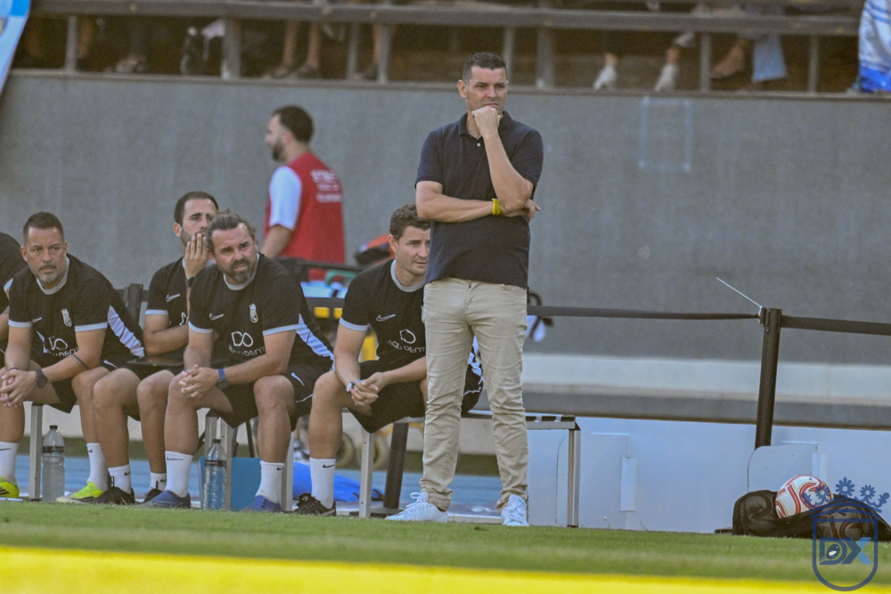

Molist demands "the knife between the teeth" to topple leaders Don Benito

Photo: Diario XerecistaThe blue-and-white coach is trusting in the reaction seen in the second half against Badajoz to storm the top of the table and open their account of home wins at Chapín, against opponents who arrive with a perfect record
Xerez CD face a hugely demanding fixture at Chapín this Sunday (19:00). The blue-and-whites host Don Benito, clear leaders of Group 4 of Segunda RFEF with six points out of six, in a match in which Xavi Molist will be looking to finally claim the first home win of the season. The Catalan coach appeared before the media with a message of confidence, despite acknowledging the quality of the opposition and the need to correct mistakes after the defeat against Badajoz (1-2).
A week of training "at maximum intensity"
Molist highlighted the good working atmosphere of recent days despite the adverse result in the last match. The blue-and-white coach said that the Monday, Wednesday and Thursday sessions were carried out at a very high intensity, a reflection of a dressing room hungry for revenge and eager for the match to arrive so they can once again show their potential. The coach is holding on to the solidity shown in the second half against the side from Badajoz as the road map to follow, although he admitted that the challenge is to carry that version of the team over from the first minute of play.
Utmost respect for leaders "who are doing very well"
Asked about the leadership of newly promoted Don Benito, Molist made no secret of his admiration for the level shown by the Extremadura side in their first two matchdays. The blue-and-white manager acknowledged that their opponents are performing at a very high level both in attack and in defence, which is why his team will have to perform at an equally high level if they want to take the three points.
On the positive momentum Don Benito are enjoying after their two wins, the Xerez coach explained that such a state of confidence can work against them, while also insisting that his team deserved more than they got from their first two league outings. Molist was clear in pointing out that, especially against Badajoz, the blue-and-whites could even have turned the scoreline around, though he stressed the need to learn from the mistakes made.
Self-criticism over corners and transitions
The Catalan coach did not shy away from self-criticism when analysing the reasons for the defeat against the Extremadura side. Molist admitted that his team conceded too much from corners and in several transitions that proved lethal, even though their opponents barely created any danger for much of the first half. Looking ahead to the game against Don Benito, the coach anticipated a similar script, as they are a side who will drop back and who base much of their attacking potential on counter-attacks, with two reference strikers and quick wingers out wide.
Praise for a "spectacular" support
One of the standout moments of the press conference came when Molist wanted to pay tribute to the behaviour of the stands during the match against Badajoz. The coach recalled that more than 8,100 spectators came to Chapín despite the 0-2 scoreline, and stressed that the response of the crowd was decisive in bringing about his team's reaction in the second half. The manager remarked that, on many occasions, a set of supporters can show their annoyance at an adverse result, but that on this occasion the push from the stands was key to the blue-and-whites coming close to completing the comeback.
Molist also regretted the disallowed goal by Jaime López in the 49th minute, an incident which, in his view, could have completely changed the outcome of the match.
"We have to win, no matter what"
Aware of the difficulty involved in stringing together two consecutive home wins, something his team can no longer achieve after the defeat against Badajoz, the coach was emphatic in pointing out that this week victory is an obligation. Molist called on his players to come out with maximum determination from the starting whistle, so that both the opposition and their own supporters sense from the outset the most combative version seen in the second half of the last match.
Medical report with only one confirmed absence
On the team news front, Molist confirmed that Saúl is the only certain absentee for the game against Don Benito, although he acknowledged that there are some minor complaints in the squad that will not prevent the bulk of the team from being called up as normal. The coach also took the opportunity to stand up for the role of the substitutes, highlighting the contribution the changes made in the match against Badajoz and stressing the importance of having players hungry to play minutes, capable of making a difference as soon as they step onto the pitch.
🇪🇸 Leer en español ← Back to home